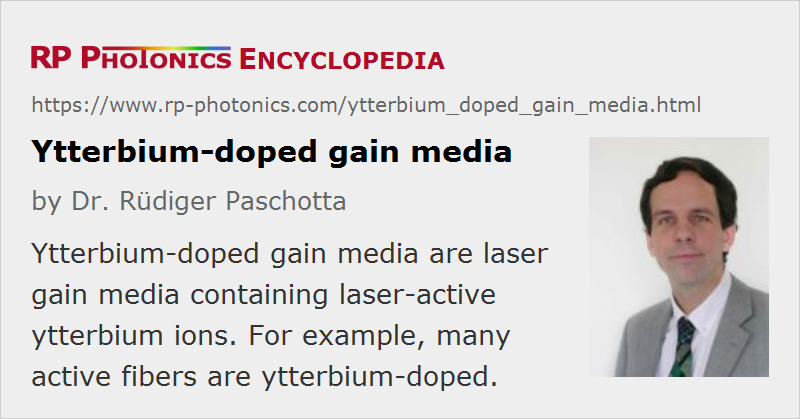

Ytterbium-doped Gain Media
Definition: laser gain media containing laser-active ytterbium ions
More general term: gain media
German: Ytterbium-dotierte Verstärkermedien
Categories: optical materials, lasers
How to cite the article; suggest additional literature
Author: Dr. Rüdiger Paschotta
Ytterbium (Yb) is a chemical element belonging to the group of rare earth metals. In laser technology, it has acquired a prominent role in the form of the trivalent ion Yb3+, which is used as a laser-active dopant in a variety of host materials, including both crystals and glasses. It is often used for high-power lasers and for wavelength-tunable solid-state lasers.
Special Properties of Ytterbium-doped Gain Media
Ytterbium-doped laser crystals and glasses have a number of interesting properties, which differ from those of, e.g., neodymium-doped gain media:
- They have a very simple electronic level structure, with only one excited state manifold (2F5/2) within reach from the ground-state manifold (2F7/2) with near-infrared or visible photons. Pumping and amplification involve transitions between different sublevels of the ground-state and excited-state manifolds (see Figure 1). The sublevels would be energy-degenerate in vacuum, but that degeneracy is removed by the electric field in the crystal lattice.

- The quantum defect is always small, potentially allowing for very high power efficiencies of lasers and reducing thermal effects in high-power lasers. However, complications can arise from the pronounced quasi-three-level behavior (see below).
- The simple electronic structure excludes excited-state absorption and also a variety of detrimental quenching processes.
- The gain bandwidth of the laser transitions is typically fairly large, compared with, e.g., neodymium-doped crystals. This allows for wide wavelength tuning ranges or for generating ultrashort pulses in mode-locked lasers.
- The upper-state lifetimes are relatively long (typically of the order of 1–2 ms), which is beneficial for Q switching.
Quasi-three-level Characteristics
The small quantum defect also has a usually unwanted consequence: the significant quasi-three-level behavior, particularly at short wavelengths. This requires such lasers to be operated with relatively high pump intensities and makes it more difficult to realize fully the potential for high power efficiency. Another difficulty arises for the resonator designs of end-pumped ytterbium lasers: a resonator mirror for injecting the pump light must have a high reflectivity at the laser wavelength and a high transmission at the only slightly shorter pump wavelength. Dichroic mirrors with such properties for closely lying wavelengths are difficult to make.

Figure 2 shows the ytterbium transition cross sections of a germanosilicate glass. Efficient pumping is possible around a wavelength of 910 nm or near 975 nm. In the latter case, the pump linewidth must be small, and only ≈ 50% excitation level can be achieved due to stimulated emission, but the absorption length and the quantum defect are smaller than for 910-nm pumping. Strong three-level behavior occurs for lasing around 1030 nm, whereas nearly four-level behavior is observed beyond 1080 nm, where there is very little reabsorption. For ytterbium-doped crystals (e.g. Yb3+:YAG), there is often a choice between different lasing transitions, where those with shorter wavelengths exhibit more pronounced three-level characteristics.
Figure 3 shows the ytterbium transition cross sections of Yb3+:YAG. In this crystalline material, the absorption and emission peaks are less broad than in a glass. The dominant emission is around 1030 nm, but there is also the weaker 1050-nm peak, which can also be utilized for laser operation.
Overview on Ytterbium-doped Gain Media
There is a very wide range of different ytterbium-doped gain media:
- yttrium aluminum garnet (Yb3+:YAG) (→ YAG lasers): suitable for high-power operation e.g. in thin-disk lasers, with emission at 1030 nm or (sometimes) 1050 nm
- yttrium vanadate (Yb3+:YVO4) (→ vanadate lasers): broad and smooth emission spectrum
- monoclinic potassium double tungstates such as Yb3+:KGd(WO4)2, Yb3+:KY(WO4)2 and Yb3+:KLu(WO4)2, also called Yb:KGW, Yb:KYW and Yb:KLuW: good combination of broad emission spectrum and high emission cross sections
- tetragonal double tungstates such as Yb3+:NaGd(WO4)2 (Yb:NGW) and Yb3+:NaY(WO4)2 (Yb:NYW): disordered crystals with particularly large gain bandwidth due to inhomogeneous broadening
- various borates, e.g. Yb3+:Sr3Y(BO3)3 = Yb:BOYS and Yb3+:GdCa4O(BO3)3 = Yb:GdCOB: very broadband emission; GdCOB has a χ(2) nonlinearity e.g. for frequency doubling
- apatites, in particular Yb3+:Sr5(PO4)3F = Yb:S-FAP and Yb3+:SrY4(SiO4)3O = Yb:SYS: broadband emission and high transition cross sections
- sesquioxides, e.g. yttria (Yb3+:Y2O3), scandia (Yb:Sc2O3), lutetia (Yb:Lu2O3) and ytterbia (Yb2O3): high thermal conductivity, suitable for high-power operation
- oxyorthosilicates, e.g. Yb3+:Y2SiO5 = Yb:YSO, Yb3+:Lu2SiO5 = Yb:LSO, Yb3+:Gd2SiO5 = Yb:GSO: very broadband emission, but strongly structured; good thermal conductivity
- Yb3+:CaGdAlO4 = Yb3+:CaAlGdO4, also called Yb:CALGO: very broadband and smooth emission spectrum, high thermal conductivity
- calcium fluoride (Yb3+:CaF2) and strontium fluoride (Yb3+:SrF2): broad emission spectrum
- various glasses (Yb:glass, e.g. based on silicate or phosphate glasses; also used in optical fibers): broad emission, but relatively poor thermal conductivity
Some of these media are also used as ceramic gain media.
In most cases, the ytterbium dopant ions replace other ions (often yttrium) of the host medium, which have about the same size. For a good match of atomic size and weight, a high thermal conductivity can be maintained even at high doping levels.
High-power Operation
Very high efficiencies, diffraction-limited beam quality, and output powers of more than 1 kW have been achieved with ytterbium-doped double-clad fiber lasers and amplifiers. Thin-disk lasers, which most often work with Yb:YAG crystals, can also generate well above 1 kW diffraction-limited output with high beam quality, or even higher powers with non-diffraction-limited beam quality.
Pulse Generation with Mode Locking
Various Yb-doped gain media have been used in mode-locked lasers (see below) for the generation of femtosecond pulses; the by far highest average output powers of 80 W have been obtained with a passively mode-locked thin-disk Yb:YAG laser [13, 15].
For passive mode locking, problems can arise in the form of Q-switching instabilities. This tendency is a consequence of the relatively small laser cross sections of ytterbium-doped media. Therefore, some of the broadband ytterbium-doped gain media are not very suitable for passively mode-locked lasers, particularly at high power levels, but can still be very useful in regenerative amplifiers. Relatively large cross sections are found for tungstate crystals.
Some ytterbium-doped crystals have a fairly broad amplification bandwidth, but the emission curve is not very smooth; it exhibits several maxima. In such cases, wide wavelength tunability may still be achieved, but the realization of very short pulses with mode locking is difficult.
Quenching and Photodarkening
Due to the very simple level structure of the Yb3+ ion, it is widely believed that quenching effects are basically impossible. However, it has been discovered [7] that even strong quenching effects can occur in ytterbium-doped fibers. In that case, some fraction of the ytterbium ions – sometimes a few percent, sometimes more than 50% – then has an extremely shortened upper-state lifetime, whereas the other Yb ions are basically unaffected. The fraction of quenched ions depends strongly on the fabrication conditions. Even a small fraction is sufficient for strongly reducing the laser or amplifier performance, particularly for laser or pump wavelengths with strong absorption cross sections.
Another detrimental effect is photodarkening in Yb-doped fibers, a gradual degradation of fibers observed particularly in cases where a high ytterbium excitation density is required.
So far, only a limited amount of data on such effects is available, and the issues are not yet very well understood.
Ytterbium Codoping
Ytterbium doping is also often used together with erbium doping. Typically, ytterbium ions absorb the pump radiation and transfer the excitation energy to erbium ions. Even though the erbium ions could directly absorb radiation e.g. at 980 nm, ytterbium codoping can be useful because of the higher ytterbium absorption cross sections and the higher possible ytterbium doping density in typical laser glasses, so that a much shorter pump absorption length and a higher gain can be achieved. Ytterbium codoping is also sometimes used for praseodymium-doped upconversion fiber lasers.
Suppliers
The RP Photonics Buyer's Guide contains 42 suppliers for ytterbium-doped gain media. Among them:
Questions and Comments from Users
Here you can submit questions and comments. As far as they get accepted by the author, they will appear above this paragraph together with the author’s answer. The author will decide on acceptance based on certain criteria. Essentially, the issue must be of sufficiently broad interest.
Please do not enter personal data here; we would otherwise delete it soon. (See also our privacy declaration.) If you wish to receive personal feedback or consultancy from the author, please contact him e.g. via e-mail.
By submitting the information, you give your consent to the potential publication of your inputs on our website according to our rules. (If you later retract your consent, we will delete those inputs.) As your inputs are first reviewed by the author, they may be published with some delay.
Bibliography
| [1] | D. C. Hanna et al., “Continuous-wave oscillation of a monomode ytterbium-doped fiber laser”, Electron. Lett. 24, 1111 (1988) |
| [2] | P. Lacovara et al., “Room-temperature diode-pumped Yb:YAG laser”, Opt. Lett. 16 (14), 1089 (1991), doi:10.1364/OL.16.001089 |
| [3] | T. Y. Fan, “Heat generation in Nd:YAG and Yb:YAG”, IEEE J. Quantum Electron. 29 (6), 1457 (1993), doi:10.1109/3.234394 |
| [4] | L. D. DeLoach et al., “Evaluation of absorption and emission properties of Yb3+ doped crystals for laser applications”, IEEE J. Quantum Electron. 29 (4), 1179 (1993), doi:10.1109/3.214504 |
| [5] | A. S. Payne et al., “Ytterbium-doped apatite-structure crystals: a new class of laser materials”, J. Appl. Phys. 76 (1), 497 (1994), doi:10.1063/1.357101 |
| [6] | R. Paschotta et al., “Ytterbium-doped fiber amplifiers”, IEEE J. Quantum Electron. 33 (7), 1049 (1997), doi:10.1109/3.594865 |
| [7] | R. Paschotta, et al., “Lifetime quenching in Yb doped fibers”, Opt. Commun. 136, 375 (1997), doi:10.1016/S0030-4018(96)00720-1 |
| [8] | C. Hönninger et al., “Ultrafast ytterbium-doped bulk lasers and laser amplifiers”, Appl. Phys. B 69 (1), 3 (1999), doi:10.1007/s003400050762 |
| [9] | S. Chénais et al., “Multiwatt, tunable, diode-pumped CW Yb:GdCOB laser”, Appl. Phys. B 72, 389 (2001), doi:10.1007/s003400100477 |
| [10] | F. Druon et al., “Largely tunable diode-pumped sub-100-fs Yb:BOYS laser”, Appl. Phys. B 74, S201 (2002), doi:10.1007/s00340-002-0867-y |
| [11] | F. Druon et al., “Apatite-structure crystal, Yb:SrY4(SiO4)3O, for the development of diode-pumped femtosecond lasers”, Opt. Lett. 27 (21), 1914 (2002), doi:10.1364/OL.27.001914 |
| [12] | P. Haumesser et al., “Determination of laser parameters of ytterbium-doped oxide crystalline materials”, J. Opt. Soc. Am. B 19 (10), 2365 (2002), doi:10.1364/JOSAB.19.002365 |
| [13] | E. Innerhofer et al., “60 W average power in 810-fs pulses from a thin-disk Yb:YAG laser”, Opt. Lett. 28 (5), 367 (2003), doi:10.1364/OL.28.000367 |
| [14] | J. Dong et al., “Dependence of the Yb3+ emission cross section and lifetime on temperature and concentration in yttrium aluminum garnet”, J. Opt. Soc. Am. B 20 (9), 1975 (2003), doi:10.1364/JOSAB.20.001975 |
| [15] | F. Brunner et al., “Powerful RGB laser source pumped with a mode-locked thin-disk laser”, Opt. Lett. 29 (16), 1921 (2004), doi:10.1364/OL.29.001921 |
| [16] | C. Kränkel et al., “Continuous wave laser operation of Yb3+:YVO4”, Appl. Phys. B 79, 543 (2004), doi:10.1007/s00340-004-1635-y |
| [17] | F. Druon et al., “Ultra-short-pulsed and highly-efficient diode-pumped Yb:SYS mode-locked oscillators”, Opt. Express 12 (20), 5005 (2004), doi:10.1364/OPEX.12.005005 |
| [18] | M. Rico et al., “Tunable laser operation of ytterbium in disordered single crystals of Yb:NaGd(WO4)2”, Opt. Express 12 (22), 5362 (2004), doi:10.1364/OPEX.12.005362 |
| [19] | J. Petit et al., “Laser emission with low quantum defect in Yb:CaGdAlO4”, Opt. Lett. 30 (11), 1345 (2005), doi:10.1364/OL.30.001345 |
| [20] | Y. Zaouter et al., “47-fs diode-pumped Yb3+:CaGdAlO4 laser”, Opt. Lett. 31 (1), 119 (2006), doi:10.1364/OL.31.000119 |
| [21] | M. Laroche et al., “Accurate efficiency evaluation of energy-transfer processes in phosphosilicate Er3+-Yb3+-codoped fibers”, J. Opt. Soc. Am. B 23 (2), 195 (2006), doi:10.1364/JOSAB.23.000195 |
| [22] | C. Cascales et al., “Structural, spectroscopic, and tunable laser properties of Yb3+-doped NaGd(WO4)2”, Phys. Rev. B 74 (17), 174114 (2006), doi:10.1103/PhysRevB.74.174114 |
| [23] | J. Koerner et al., “Measurement of temperature-dependent absorption and emission spectra of Yb:YAG, Yb:LuAG, and Yb:CaF2 between 20 °C and 200 °C and predictions on their influence on laser performance”, J. Opt. Soc. Am. B 29 (9), 2493 (2012), doi:10.1364/JOSAB.29.002493 |
See also: gain media, rare-earth-doped gain media, laser crystals, rare-earth-doped fibers, four-level and three-level gain media, neodymium-doped gain media, ceramic gain media, tungstate lasers, solid-state lasers, photodarkening, The Photonics Spotlight 2006-09-06
and other articles in the categories optical materials, lasers

This encyclopedia is authored by Dr. Rüdiger Paschotta, the founder and executive of RP Photonics Consulting GmbH. How about a tailored training course from this distinguished expert at your location? Contact RP Photonics to find out how his technical consulting services (e.g. product designs, problem solving, independent evaluations, training) and software could become very valuable for your business!
|  |
If you like this page, please share the link with your friends and colleagues, e.g. via social media:
These sharing buttons are implemented in a privacy-friendly way!